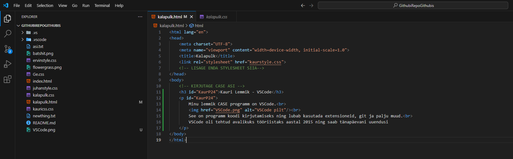
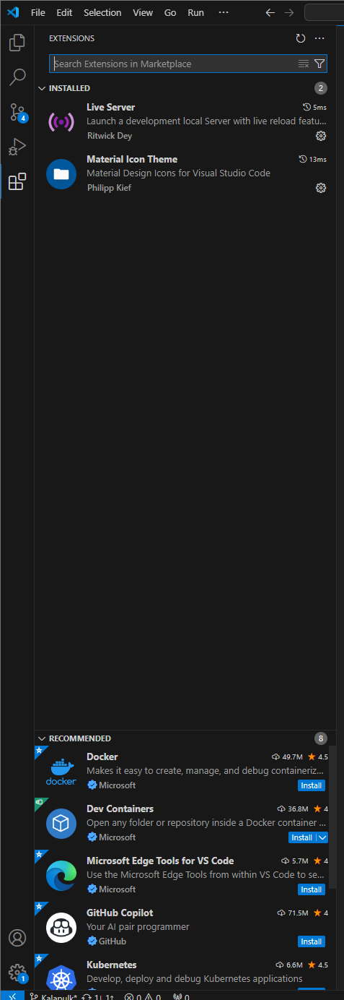
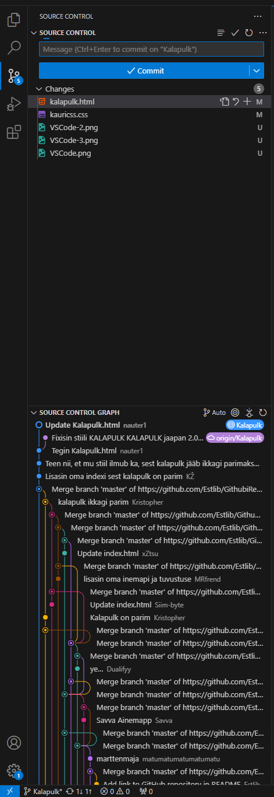
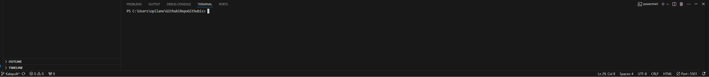

See on kasulik Süsteemi ja Tarkvara Kavandamises ning Teostuse Etappis.

See on programm koodi kirjutamiseks ning lubab kasutada extensioneid, git ja palju muud.
VSCode oli tehtud avalikuks tööriistaks aastal 2015 ning saab tänapäevani uuendusi
<<<<<<< HEAD


======= 
Näide Koodi editorist mis lubab kasutada mitu erinevat programmeerimis keeli (näiteks C, C#, Java, Python jms)
 
Näide Extensionitest ning Git-ist Extensionid on kasutatud selleks et lisada funktsionaalsust VSCode-ile mis pole tavaliselt olemas
Ning Git Funktsionaalsus on olemas et saaks töötada Githubiga koos et salvestada ja jagada projekte

Näide VSCode-i Terminalist, mis lubab kasutada käske Terminalist, Git-Bashist ja powershellist.
>>>>>>> 929f2dddbcb71262ac55ab66811ec2a48b6cd509 VSCode-i originaalne autor on Erich Gamma kuid praegu selle omanik on üldiselt Microsoft